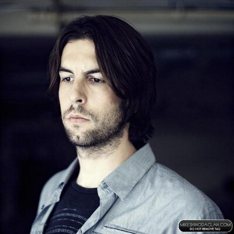
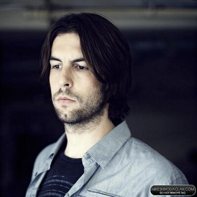

BIOGRAFIA
 

Linkin Park é uma banda de rock dos Estados Unidos formada em Agoura Hills, Califórnia. A formação atual da banda inclui o vocalista e multi-instrumentista Mike Shinoda, o guitarrista Brad Delson, o baixista Dave Farrell, o DJ Joe Hahn e o baterista Rob Bourdon, todos membros fundadores. Outro membro que estava com a banda desde sua fundação foi Chester Bennington, falecido em 2017. O vocalista Mark Wakefield e o baixista Kyle Christner são ex-membros da banda.
Formado em 1996, Linkin Park alcançou fama internacional com o seu álbum de estreia, Hybrid Theory (2000), que foi certificado como diamante pela RIAA em 2005 e multi-platina em vários outros países, se tornado um dos álbuns mais vendidos de todos os tempos. Seu segundo álbum, Meteora (2003), continuou o sucesso da banda, liderando a parada de álbuns da Billboard 200 em 2003, e foi seguido por um extenso trabalho de caridades e de turnês em todo o mundo. Tendo adaptado o nu metal e rap metal para um estilo de rádio ainda que densamente dividido em seus dois primeiros álbuns, a banda explorou outros gêneros em seu terceiro álbum, Minutes to Midnight (2007). O álbum liderou as paradas da Billboard e teve a terceira melhor semana de estreia de qualquer álbum naquele ano.
A banda continuou a explorar uma variação mais ampla de tipos musicais em seu quarto álbum, A Thousand Suns (2010), dividindo sua música com sons mais eletrônicos. O quinto álbum da banda, Living Things (2012), combinou elementos musicais de todos os seus álbuns anteriores. Seu sexto álbum, The Hunting Party (2014), retornou a um som de rock mais pesado e seu sétimo álbum, One More Light (2017), foi um disco mais eletrônico e orientado para a música pop. Linkin Park entrou em um hiato quando o vocalista Bennington cometeu suicídio em julho de 2017. Em abril de 2022, Shinoda revelou que a banda não estava trabalhando em novas músicas nem planejando fazer uma turnê em um futuro próximo.
Linkin Park está entre as bandas mais bem sucedidas do século XXI e de todos os tempos, tendo vendido mais de 100 milhões de álbuns em todo o mundo. Eles ganharam dois Grammy Awards, seis American Music Awards, quatro MTV Video Music Awards e três World Music Awards. Em 2003, a MTV2 nomeou o Linkin Park como a sexta maior banda da era dos videoclipes e a terceira melhor do novo milênio. Em 2012, a banda foi votada como o maior artista dos anos 2000 em uma pesquisa realizada pela VH1. Em 2014, a banda foi declarada como "a maior banda de rock do mundo" pela Kerrang!